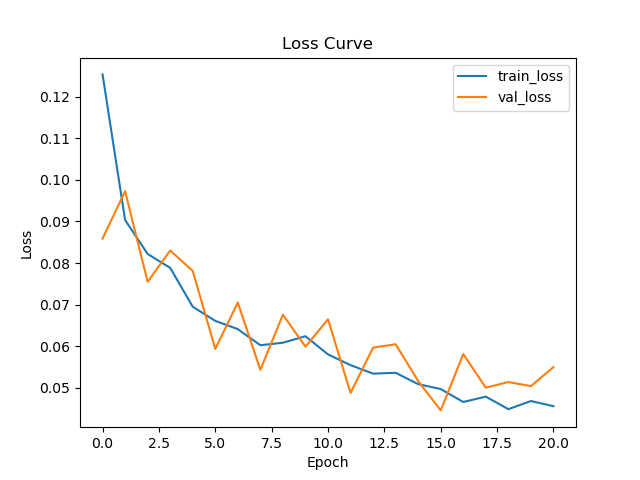

Training Performance
Siamese Model

You can see model training loss vs validation loss
As i monitor the model using callback function till 5 epoch.
model trained for 50 epochs
Note:As computation(Gpu,Ram) required a lot for such model (this takes 13 gb Ram,used Kaggle Free Tpu4*2)
we takes only 100 unique and 6 IMage created using Data augmentation for each image,so total 700 image
for training.